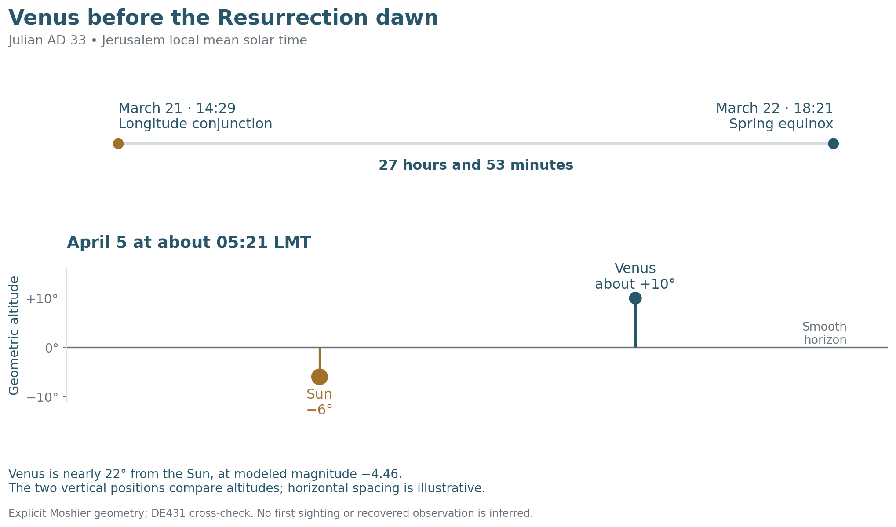
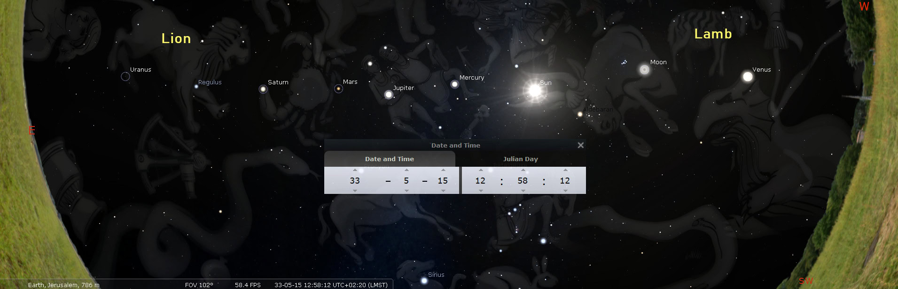
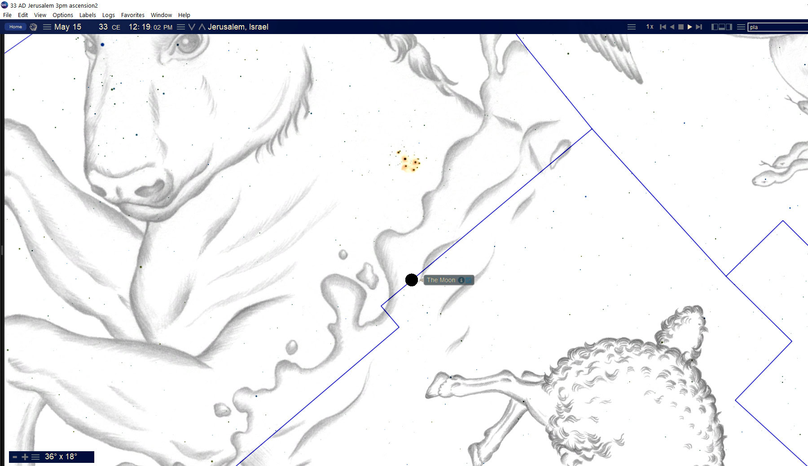
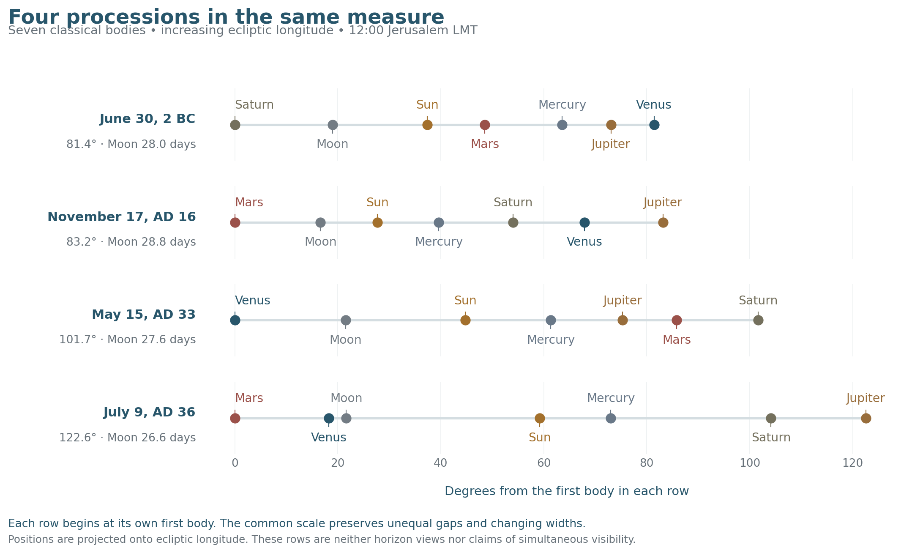
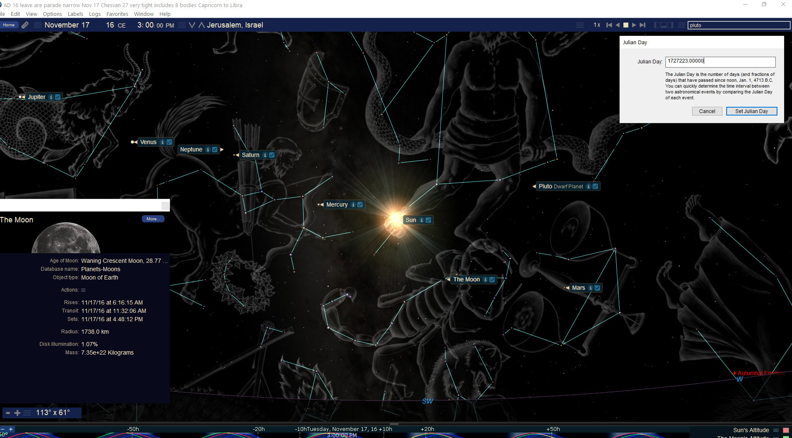
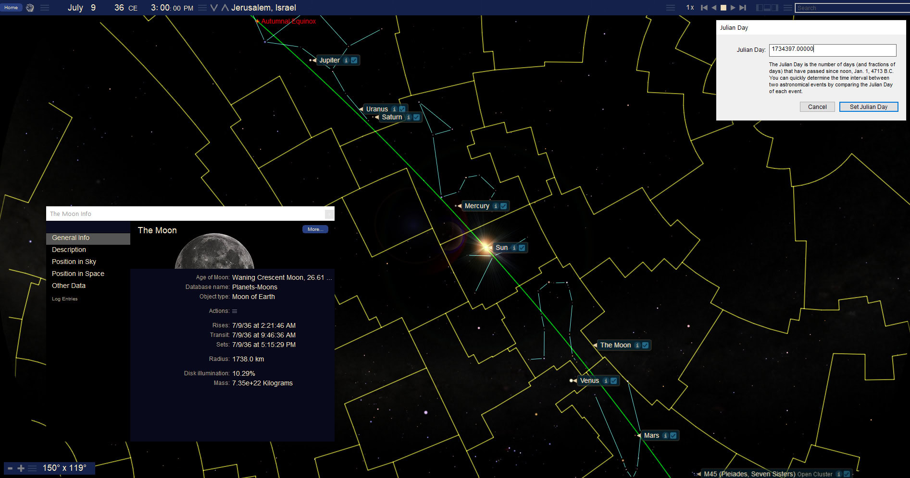

The Morning Star and the Ascended Lamb
Book 2 · Celestial Signs of the First Advent · Chapter 11
Venus and the planetary processions surrounding Christ’s coming and exaltation
“I, Jesus, have sent My angel to give you this testimony for the churches. I am the Root and the Offspring of David, the bright Morning Star.”
— Revelation 22:16, BSB[1]
The Moon beside the Cross brought us to the evening of Christ’s death. The next movement is toward His rising and reception in heaven. Venus has become a morning object, and the sky around the proposed Ascension date gathers the seven classical wandering lights into a broad procession. Earlier and later arrangements allow us to examine that scene within a longer celestial history.
Book 1 followed the Ascension procession closely. Here I want to carry the comparison outward: back to the birth-era sky of 2 BC, through AD 16, into the Passion and Ascension of AD 33, and onward to AD 36. The dates are specific. The scriptural relationship through which I read them concerns the Lamb’s authority over the whole creation.
I approach that authority from heaven as well as from earth. The disciples saw Jesus taken from them. John sees the slain Lamb receiving the worship of the heavenly company. An arrangement concealed by daylight can belong within that larger testimony even when the people beneath it neither see nor understand it. Human recognition is one part of a sign’s history; it does not set the limits of its intended audience.[2]
Venus before the Resurrection dawn
Venus appears on either side of the Sun as an evening or morning light. During an inferior conjunction it passes on the near side of the Sun. Its disappearance into the Sun’s neighborhood and emergence ahead of sunrise give me a created image through which to contemplate Christ’s death and rising. The identification of Christ as the bright Morning Star comes from Revelation. The application to this particular Venus cycle is the reading I propose.
For AD 33, the seasonal sequence can be stated precisely enough to examine. Venus and the Sun reach equal ecliptic longitude on March 21, around 14:29 Jerusalem local mean solar time. The spring equinox follows on March 22, around 18:21, approximately 27 hours and 53 minutes later. All civil dates in this chapter are Julian; local mean solar time, abbreviated LMT, is defined from Jerusalem’s longitude.[3]
Equal longitude is a conjunction along the ecliptic coordinate. Venus still lies about 7.4° from the Sun because of its latitude. This was no transit across the solar disk. The least angular separation occurs later on March 21; the two definitions of conjunction give different times.[4]
The conjunction and equinox therefore belong to one seasonal approach, with their separate moments intact. Book 1’s selected evening-based Enochian year had begun earlier, on March 17. A solar-calendar opening, an equinox, and a planetary conjunction each have their own definition.
By the adopted Resurrection Sunday, April 5, Venus is well into its morning position. At approximately 05:21 LMT, with the Sun’s center 6° below the horizon, Venus stands about 10° above it, nearly 22° from the Sun. Its calculated magnitude is about −4.46, a bright morning planet. The geometry offers an opportunity for a sighting before sunrise, although the actual atmosphere and skyline would govern what someone saw.[5]


I see a fitting accompaniment to the empty tomb: the bright light precedes the sunrise after its passage through the Sun’s neighborhood. The sky does not supply the witnesses’ account of the Resurrection. It carries the celestial comparison I am examining beside their testimony. Its meaning can reach heaven even where an earthly sighting went unrecorded.
Forty days and the Friday scene
Luke describes the risen Jesus appearing to His disciples over a span of forty days, teaching them about the kingdom of God. He then tells of the Ascension:
“After He had said this, they watched as He was taken up, and a cloud hid Him from their sight.”
— Acts 1:9, BSB[6]
The two counting conventions established in Book 1 give different closing dates:
| Closing date in AD 33 | Elapsed date intervals from April 5 | Dates counted including both ends |
|---|---|---|
| Thursday, May 14 | 39 | 40 |
| Friday, May 15 | 40 | 41 |
I follow the forty full elapsed days construction here and choose Friday, May 15 for the scene. The Thursday closing remains the fortieth included date. These are two ways of counting toward a proposed Ascension date, rather than two Ascensions.[7]
Luke’s description of the Mount of Olives as a Sabbath day’s journey from Jerusalem supplies an ordinary measure of distance. I also suggest that the Sabbath wording carries an intentional temporal clue. Scripture’s words are carefully chosen. Luke may preserve the approach of the Sabbath within a brief geographical notice, leaving the reader a clue without interrupting the narrative with a timetable. In the Friday construction, the disciples return as the Sabbath approaches.[8]
I receive that further force through the combined reading of the wording, the count, and the sky. Acts gives no exact Ascension hour. The 13:00 LMT reference below lets us inspect a definite arrangement within the proposed day.
The Lamb and the procession
The supplied overview displays May 15 at 12:58:12, close to that reference. Its dark sky is a software presentation with daylight suppressed. The seven classical wanderers are the Sun, Moon, Mercury, Venus, Mars, Jupiter, and Saturn: the two great lights together with the five planets familiar without telescopes.


Read along increasing ecliptic longitude, the order at 13:00 is:
Venus → Moon → Sun → Mercury → Jupiter → Mars → Saturn.
In that directed order, Venus leads. The occupied arc is about 101.62°. The Moon lies almost halfway from Venus to the Sun in longitude, at about 49.3% of that interval. The gaps among all seven are unequal; Book 1 gives their individual measures and explains why they fail the proposed test that every gap lie within 20% of the mean.[9]
The constellation setting gives the procession its pictorial field. Venus is in Aries, the Ram, which I contemplate through the Lamb. The Moon and Sun are in Taurus; Mercury and Jupiter are in Gemini; Mars and Saturn are in Cancer. These are modern IAU constellation assignments, checked separately from the traditional artwork. Regulus and Uranus extend the larger picture into Leo beyond the seven-body arc.[10]
Revelation joins the Lion of Judah and the slain Lamb in one victorious Lord. I read the movement from the Lamb toward the royal star through that union. The seven classical bodies, Regulus, and Uranus give nine selected points in the expanded scene. Keeping the groups identified allows us to contemplate the wider image without attaching its width or count to the smaller seven.
There is also a period when all seven classical bodies stand above a common Jerusalem horizon. In the declared geometric-center model, Saturn rises last near 08:56, and Venus sets first near 15:07. The overlap is about 6 hours and 11 minutes. This is a calculated daytime window. I place its approximate six-hour relation beside the proposed Sabbath clue, while leaving the precise Ascension hour unassigned.[11]
Most of this company would be concealed by the Sun’s brightness. That concealment belongs within my reading. A cloud took Jesus from the disciples’ sight; His reception in heaven exceeded the part they could watch from the ground. The created company could proclaim His victory before a heavenly audience whose understanding was not restricted by Jerusalem’s daylight.
The cluster and the witnesses
The closer supplied plate makes the Moon and Pleiades easier to locate beside the Taurus and Aries figures. Its original software clock is retained. It illustrates that relationship, while the overview and calculation establish the reference scene.


Scripture names the Pleiades within God’s rule over the heavens. Their familiar sevenfold appearance also invites comparison with the seven stars in Christ’s hand. John expressly identifies those stars as the angels of the seven churches. I bring the cluster alongside that explanation as a proposed created image; the cluster’s appearance does not replace John’s own identification.[12]
The Sun and Moon in Taurus can likewise be contemplated beside Joseph’s blessing in Deuteronomy 33. The blessing gathers the gifts of heaven, the Sun’s produce, the seasons, and the strength of the firstborn bull. Joseph’s story already leads through humiliation and suffering toward authority that preserves life. I hear that story within this part of the celestial scene.[13]
Mercury and Jupiter in Gemini then give the witness comparison developed in Chapter 8 a place in the procession. The messenger and king stand in the Twins. Acts records the two men in white at the Ascension and sends the apostles out as witnesses. Its later account of Lystra also preserves the cultural pairing of Hermes and Zeus, names associated with Mercury and Jupiter, while the apostles direct worship toward the living God. Scripture supplies the direction of my use of those names.
Beyond them, the broader train can be read through the subjection of hostile powers. Ephesians speaks of ascent, captives, and gifts; Colossians describes the disarming of rulers and authorities; First Peter brings Noah and the imprisoned spirits into a passage ending with Christ at God’s right hand. Book 1 follows these meanings more fully. Here they give the processions across the years a common theological setting.[14]
Four processions across the years
To compare the four arrangements, I use the same 12:00 Jerusalem LMT reference on each named date. A common reference matters because the Moon moves noticeably within a few hours. The May 15 comparison row is consequently one hour earlier than the 13:00 Ascension tour, giving a slightly different width.
“Span” measures the smallest occupied arc in ecliptic longitude containing the seven classical bodies. “Moon age” measures elapsed time since the preceding astronomical new Moon. It is neither an observed crescent date nor a recovered Hebrew day number.[15]
| Julian date | Seven-body span | Moon age | Ends in increasing longitude |
|---|---|---|---|
| June 30, 2 BC | 81.4° | 28.0 days | Saturn → Venus |
| November 17, AD 16 | 83.2° | 28.8 days | Mars → Jupiter |
| May 15, AD 33 | 101.7° | 27.6 days | Venus → Saturn |
| July 9, AD 36 | 122.6° | 26.6 days | Mars → Jupiter |


All four scenes contain a late-waning Moon. The birth-era and Ascension scenes exchange Saturn and Venus as their directed endpoints. The AD 16 and AD 36 scenes repeat Mars and Jupiter at the ends. Those relationships survive a fresh calculation with two ephemeris methods. They provide the comparison; the spaces between bodies need not be equal for the ordered company to have meaning.
The birth era and the reversed order
The June 30, 2 BC procession follows the Venus–Jupiter encounter discussed in Chapter 2. Read in increasing longitude, its order is Saturn, Moon, Sun, Mars, Mercury, Jupiter, Venus. The Sun and Moon stand between Saturn at one end and Venus at the other. In the AD 33 scene Venus takes the first end and Saturn the last.
That reversal allows me to contemplate coming and going: Christ’s entrance into the world and His reception in heaven. I am comparing the two created arrangements through His life. The 2 BC sky belongs to the birth-era sequence already introduced; it does not replace the historical 6 BC anchor or the received December 25, 1 BC / January 1, AD 1 framework used for other comparisons.[16]
The Pleiades and other objects appear around the original birth-era plates, but the width above measures the seven classical bodies. The boundary view in Chapter 2 gives the fuller field. Here the changed order is what carries the comparison forward.
The autumn scene in AD 16
On Tuesday, November 17, AD 16, the same seven occupy about 83.2°. Their directed order is Mars, Moon, Sun, Mercury, Saturn, Venus, Jupiter. The Moon is very late in its cycle, almost 29 days after conjunction. The arrangement falls within the years of Christ’s earthly life that the Gospels largely pass over.


The original artwork makes the narrow company easy to follow. Neptune lies geometrically within its longitude arc, in Sagittarius, at approximately magnitude 8. It was present in the created sky even though it was unavailable to ordinary unaided sight. I can therefore consider an eight-body image without claiming that ancient people recognized Neptune or counted it among the classical seven.[17]
The scene also brings the autumn form of the Noah comparison into view. A year reckoned from autumn places its second month in this season. That gives an autumnal counterpart to the spring second-month Ascension reading. The Moon’s waning phase alone cannot settle a Cheshvan day or the year beginning used for the Flood account. Those calendar choices require their own statement.
I read the arrangement as another appearance of the procession theme during the hidden years. No recorded event in Jesus’ life is assigned to this particular day.
The summer scene in AD 36
The later comparison falls on Monday, July 9, AD 36. Its seven classical bodies occupy about 122.6°, with the directed order Mars, Venus, Moon, Sun, Mercury, Saturn, Jupiter. The Moon is about 26.6 days old. Uranus lies within the larger occupied longitude arc, near Saturn and Jupiter in Virgo.[18]


The scene repeats the Mars–Jupiter endpoints of AD 16. I read its return of the ordered company beneath the promise given at the Ascension: the Lord taken into heaven will come again. This is a proposed return tableau in the created sky. It supplies no prediction that Christ’s bodily return occurred in AD 36.
The July scene gives a summer counterpart to AD 16’s autumn and AD 33’s spring. The shared Moon phase belongs near the end of a month. It does not make all four scenes the twenty-seventh day of the same Hebrew month.
From May 15, AD 33 to July 9, AD 36, the reference times displayed in the two supplied charts are approximately 1,151.06 days apart, which is about 1,150 days. This is about 3.15 ordinary solar years. The preceding astronomical new Moons are 39 lunar cycles apart. The Repository’s later AD 36t/37n bracket retains its own Tishri/Nisan endpoints.[19]
I read this approximate 1,150-day span beside 1,150 = 2,300 ÷ 2, half of Daniel’s evening-morning number. The nearby 1,152 = 8 × 12 × 12 supplies the Noahic and covenant association. The correspondence is approximate, as celestial intervals commonly include fractions of a day.[20]
Noah and the measured intervals
First Peter explicitly joins Noah, the eight souls saved through water, baptism through Christ’s Resurrection, and the ascended Christ with angels and powers subject to Him. That passage gives the Noah–Ascension relationship its scriptural ground. The proposed planetary company is a further image within that relationship.
Genesis distinguishes the ark’s rest on the seventeenth day of the seventh month from the earth’s full drying on the twenty-seventh day of the second month. The command to leave the ark follows the latter notice. The departure into a renewed earth and the offering whose aroma ascends give the second-month comparison its force.[21]
In Book 1’s earlier lunar row, with a 30-day Nisan, May 15 noon falls on II 27. The later lunar row places it on II 26; a 29-day Nisan advances either label by one. My proposed anniversary therefore belongs to a stated lunar construction. File 20 preserves the Iyar 27 Ascension comparison in its Jubilees-related chronology, where 2548 BC to AD 33 gives 2,580 years = 1,290 + 1,290.[22]
The four processions share the ending phase of a lunar cycle, and two contain an additional outer planet within the seven-body arc. Those features invite the image of the ark’s company brought through judgment into a new beginning. The heavenly audience can encompass bodies that an earthly observer could not identify.
The whole span from June 30, 2 BC to July 9, AD 36 gives another exact date count:
13,524 days = 23 × 12 × 49.
The Repository’s familiar conversion ratios produce two further forms:
| Operation on the date count | Converted measure |
|---|---|
| 13,524 × 70/69 | 13,720 = 4 × 7 × 490 |
| 13,524 × 25/23 | 14,700 = 30 × 490 |
I place these forms beside the jubilee grammar developed through the book. The original civil-date span remains 13,524 days, about 37.03 solar years. The larger values are converted numerical measures. They do not turn the intervening events into thirty ordinary years followed by two literal 3½-year periods.[23]
A further Flood-to-Christ comparison uses the explicitly selected +60 Terah alternative. The standard MT Flood and Arphaxad anchors move from 2458 and 2456 BC to 2518 and 2516 BC. Their spans to AD 33 become 2,550 = 1,260 + 1,290 and 2,548 = 1,274 + 1,274. These belong to that named alternative. The book’s ordinary MT anchors retain their stated role.[24]
The throne and the witnesses on earth
The Ascension gives the procession its direction. The One raised from death receives authority; His witnesses return to Jerusalem and await the promised Spirit. At Pentecost, Peter proclaims the exalted Jesus and quotes the promise of His seat at God’s right hand. The heavenly enthronement bears fruit among people who will carry the testimony outward.
Chapter 8’s later Jupiter comparison can be set beside that movement. The named dates April 3 → May 15 → June 26 give 42 + 42 days at a common clock reference. Pentecost under Book 1’s Sunday-Omer construction falls on May 24. Jupiter’s actual closest approach to the Sun comes later, near June 26 at 02:20 LMT. These retain their separate places; the date ladder supplies the proposed numerical accompaniment.[25]
Ephesians states the reach of Christ’s ascent plainly:
“He who descended is the very One who ascended above all the heavens, in order to fill all things.”
— Ephesians 4:10, BSB[26]
That is the height from which I want to look at these scenes. The heavenly company is real. So are the witnesses praying in Jerusalem, the people hearing them, and the nations receiving the Gospel. The suffering of Christ’s servants remains part of the earthly story, even within His victory. Paul can describe the apostles as a spectacle to angels as well as to men.
I propose that the changing celestial company belongs to the witness of the same Creator who ordered the history into which Christ came. Heaven may receive that witness long before people learn to read it. The arithmetic gives the proposal definite boundaries, and Scripture gives it the Lord whose work I am seeking to understand.
The next chapter follows the AD 34–35 scenes in Leo and Virgo: the close company of Jupiter and Saturn, the Woman’s imagery, and the return of the royal theme. Those later scenes continue the celestial history around the exalted Lamb.
Source notes
1. Revelation 22:16, BSB, quoted exactly. Compare Revelation 2:26–28. Christ’s title and the author’s application to Venus are distinguishable. Return
2. Revelation 5:6–14; Psalm 19. Repository File 21, Part VI, Axiom 21.1 retains the Star Script principle as theological meaning-context. It does not function as an ephemeris or certify the chosen planetary dates. Book 1’s The Heavens and the Ascended Lamb gives the fuller related reading. Return
3. Jerusalem 35.235° E, 31.778° N, elevation 754 m. LMT = UT + 2h20m56.4s. The AD 33 calculation fixes ΔT = 10202 s for continuity with Book 1; the other dates use NASA’s −500 to AD 500 polynomial. Dates are Julian; civil BC/AD has no year zero. Astronomical −1 means 2 BC and 0 means 1 BC. See NASA’s ΔT expressions, Swiss Ephemeris documentation, and the JPL Horizons manual. Return
4. Explicit Moshier gives longitude conjunction March 21, 12:07:51 UT / 14:28:48 LMT, at 7.385° full separation. Least separation is about 20:32:30 UT / 22:53:26 LMT at 7.365°. Equinox is March 22, 16:00:22 UT / 18:21:18 LMT. The longitude-conjunction/equinox interval is 27.8751 h. Swiss compressed DE431 differs by about 18 s for longitude conjunction and 5 s for equinox. Diagnostic seconds identify the calculations, not recovered ancient observational precision. The older approximately 21:00 UT conjunction wording did not distinguish the event definitions. Return
5. Geometric topocentric solar-center altitude −6°, smooth level horizon, no refraction, terrain, extinction, or horizon dip. At about 05:21 LMT, Venus altitude is 9.957°, elongation 21.988°, visual magnitude −4.462 in the stated model. The magnitude is computed photometry, not an observation. The model’s brighter phase comes later in April; no Resurrection-day brightness maximum or first sighting is asserted. Return
6. Acts 1:3–12. The second block quotation reproduces verse 9 exactly. The two men and promised return follow in verses 10–11. Return
7. April 5 to May 14 gives 39 elapsed date intervals / 40 included dates; April 5 to May 15 gives 40 / 41. Same-clock date counts should not be mistaken for recovered Ascension clocks. Current Book 1 chapters 8, 10, 14 and 16 preserve the alternative constructions. File 13, §6 controls AD 33 preferred / AD 30 possible Passion states, not a new independently established May 15 hour. AD 34 is not a Passion date. Return
8. Acts 1:12 ordinarily describes distance. The author also proposes an intentional temporal force in its Sabbath wording within the cumulative Friday reading. The verse states neither Friday afternoon nor a six-hour Ascension duration. Return
9. The reference at 13:00 LMT gives W = 101.623580°, Moon fraction 0.493268 of the Venus–Sun longitude interval, and gaps 22.066°, 22.668°, 16.681°, 13.883°, 10.510°, 15.816°. Maximum relative departure from the mean gap is 0.379498, exceeding 0.20. Book 1’s retained full-day scan already tests that particular claim. Original archive IMG0157 prints May 15, 12:58:12 and UTC+02:20 LMST; the filename’s May 5 is incorrect. Its original pixels are retained. Return
10. IAU assignments are computed from J2000 equatorial coordinates using Astronomy Engine, independently of artwork. At 13:00 the sequence is Aries / Taurus / Taurus / Gemini / Gemini / Cancer / Cancer. The additional Regulus and Uranus are in Leo, beyond Saturn in longitude. Revelation 5:5–6 supplies Lion/Lamb language. Adding the star and outer planet creates a different nine-point group. Return
11. Geometric topocentric centers, airless smooth horizon, 927 hPa / 15°C supplied consistently although refraction is disabled. Last rise about 08:56:03 LMT; first set about 15:06:47; overlap 6.178823 h. The DE431 comparison changes these endpoints by much less than one second under the same inputs. Historical timing uncertainty and daylight visibility remain separate questions. The scene’s elevation differs slightly from Book 1’s 786 m, with no effect at the printed minute precision. Return
12. Revelation 1:16, 20; Job 9:9; 38:31. Original IMG0093 is a close view at its printed May 15, 12:19 software clock, without a separate JD identifying its clock convention. It is used for the Moon/cluster/artwork relationship, not an exact simultaneous horizon test. Its displayed color and artwork do not establish unaided daylight visibility. Book 1’s different 16:50 close view retains its own time. Return
13. Deuteronomy 33:13–17. BSB verse 14 prints seasons; the underlying lunar/month language was documented in Book 1. The bull and luminary application is typological. Acts 1:8, 10–11; Acts 14:11–18. The apostles reject the divine honors at Lystra; the passage supplies a cultural pairing, not an astrological commission. Return
14. Ephesians 4:8–10; Colossians 2:15; 1 Peter 3:18–22. Their respective captives, hostile powers, and spirits are joined through a theological reading without making every identification interchangeable. The mythological comparisons developed in Book 1 are not re-derived here. Return
15. Common comparison time: 12:00 Jerusalem LMT. Moshier widths: 81.419892°, 83.167427°, 101.653809°, 122.557155°; ages: 27.964580, 28.787989, 27.601717, 26.624375 TT days since astronomical conjunction. Independent DE431 widths differ by at most 0.0014°; Moon longitudes by at most about 0.018°. Ordinary population gap-CV values are 0.308, 0.137, 0.255, 0.548; CV = population standard deviation of the six adjacent occupied-arc gaps divided by their mean. The AD 36 scene fails the older proposed ≤0.40 rule if that rule means this CV. This spacing diagnostic is distinct from Book 1’s maximum-departure test. Return
16. June 30, 2 BC is Monday; noon date reference 1720873. Chapter 2’s approximately 81.5° uses the supplied overview’s different reference instant; the present common-noon comparison gives 81.4°. The group and endpoint order are the same. File 13 preserves historical 6 BC, received 1 BC / AD 1, and other declared Christological states rather than one interchangeable ordinary birth date. Return
17. November 17, AD 16 is Tuesday; noon reference 1727223. Original IMG0281 shows JD 1727223.00000 and 15:00 on its UTC+3 software clock. The table instead uses 12:00 LMT. Neptune is formally in Sagittarius, magnitude about 7.97, within the occupied seven-body longitude arc. The “mid-life” source label is not an exact birth-to-death midpoint. The present chapter assigns no historical event to that date. Return
18. July 9, AD 36 is Monday; noon reference 1734397. Original IMG0406 prints JD 1734397.00000 / 15:00 software time, consistent with UTC+3. Its Julian date agrees; its Moon age belongs to that original scene, while the table uses common 12:00 LMT. Mars is in Taurus, Venus in Orion under formal boundaries, Moon in Gemini, Sun in Cancer, Mercury in Leo, and Saturn/Jupiter/Uranus in Virgo. Uranus, magnitude about 5.57, is a geometric additional body; no human recognition is inferred. The July 10 alternatives are a different date. Return
19. The supplied chart instants are May 15, AD 33 at 12:58:12 Jerusalem LMT (IMG0157) and July 9, AD 36 at JD 1734397.00000 (IMG0406). With the declared LMT offset of 8456.4 seconds, the first instant is UT JD 1733245.942542; their difference is approximately 1151.057458 days, rounded to 1151.06. These are selected chart times. The common 12:00 LMT comparison still gives 1151.0 days; its civil-date subtraction is 1734397 − 1733246 = 1151. The interval is about 3.151 Julian years, rather than a literal 3½-year completion. The preceding new Moons are 39 conjunctions apart, verified by successive roots rather than only dividing by a mean month. File 13, §6.2 gives AD 29t/30n → AD 33n/33t → AD 36t/37n. The summer parade does not replace its terminal seasonal coordinates or date the Second Coming. Return
20. 2300 / 2 = 1150; 8 × 12 × 12 = 1152. Compare Daniel 8:13–14 and the component controls in File 17. “About 1,150 days” rounds the chart interval to the nearest ten days for this comparison. The decimal and the exact civil-date count remain in note 19; no inclusive-count substitution is made. Return
21. Genesis 7:7–9, 13–16; Genesis 8:4, 13–20; 1 Peter 3:20–22. The paired-creature description belongs explicitly to entry; departure is described by kinds. Ark rest, surface drying, full drying and departure remain distinct notices. Eight geometric bodies do not independently establish an intended ark image. Return
22. Book 1’s Chapter 16 gives the conditional lunar-row labels. File 20, §5.6 retains the Iyar 27 / AD 33 typology in its Jubilees-related 2548 BC ark-exit state: 2548 + 33 − 1 = 2580 = 1290 + 1290 = 430 × 6. It remains separate from that file’s AD 30 Danielic target and the standard MT Flood chronology. The anniversary is not independently dated by a waning phase. Return
23. 1734397 − 1720873 = 13524; 23 × 12 × 49 = 13524; 13524 × 70/69 = 13720 = 4 × 7 × 490; 13524 × 25/23 = 14700 = 30 × 490. File 00 and File 17 control these exact-rational operators. Adjacent date spans are 6350, 6023, 1151 days. The whole 37.03-year approximation does not establish literal 30 + 3½ + 3½ segments. The 70/69 and 25/23 operations are stated conversions, not new physical elapsed times. Return
24. File 18, minimum/normal and variant-scope controls: the +60 fork applies from Terah backward, without silently shifting Abraham’s fixed state or Aaron onward. Here the standard full-430-Egypt MT anchors are 2458 / 2456 BC; adding 60 gives 2518 / 2516. Then 2518 + 33 − 1 = 2550 and 2516 + 33 − 1 = 2548. Unshifted spans are 2490 / 2488. The 1274 component is 3½ × 364, distinct from 1260 = 3½ × 360. No restored Cainan or +60 state is adopted as the default. Return
25. Acts 2:22–36; Psalm 110:1. Chapter 8’s retained Jupiter result gives closest separation near June 26, 02:20 LMT. Common-date differences are 42 and 42; the 13:00 May 15 scene to the actual conjunction is about 41½ days, and April 3 noon to it about 83½. May 24 is the stated Book 1 Pentecost construction; the June event is later. Return
26. Ephesians 4:10, BSB, quoted exactly; 1 Corinthians 4:9. The apostles’ suffering and the angelic audience belong to Paul’s text. The particular planetary applications remain the author’s reading through that scriptural perspective. Return
Scripture quotations are from the Berean Standard Bible (BSB), public domain.
← Previous: Chapter 10 — The Moon Beside the Cross
Book 2 contents
Next: Chapter 12 — The Woman and the Lion →